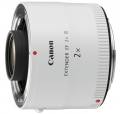

EXTENDER EF 2x III采用全新的光学设计，其镜头结构为9片5组。
不想买长焦，用增倍镜延长焦段是个好想法，但是画质不要想象会比同焦段的定焦或变焦好。 很有可能是没买的想试试，买了就后悔。
能够延长焦段，与镜头和机身通信畅通。满足没有长焦的欲望。
对焦速度慢了，光圈收缩了，想用增倍拍摄还要求理想画质的想法落空了。
中长焦变长、超长焦性价比高的方案。我用220.
像质损失少、防尘防水滴。
没有非球面、与镜身白色不统一、价格略贵、体积略大、前镜组突出。
太好了！
装在小白兔上，就是大白了，感觉成像依旧锐利无比，最大光圈不错。打鸟依旧能够数毛。
对焦速度下降些，常有点犹豫不决。拍摄飞鸟时感觉跟不上。2950元的价格有点贵。